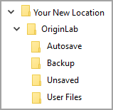
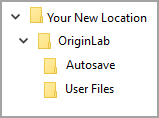
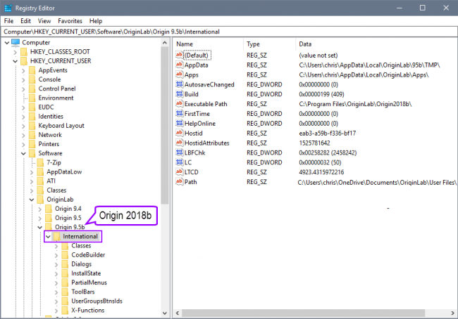
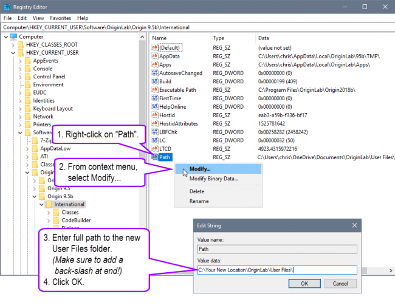
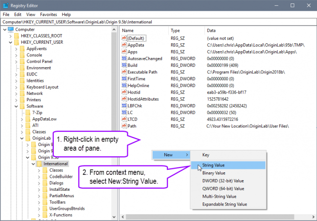
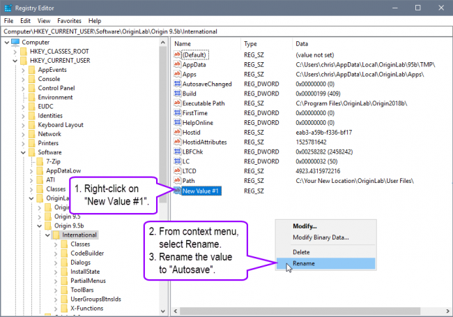
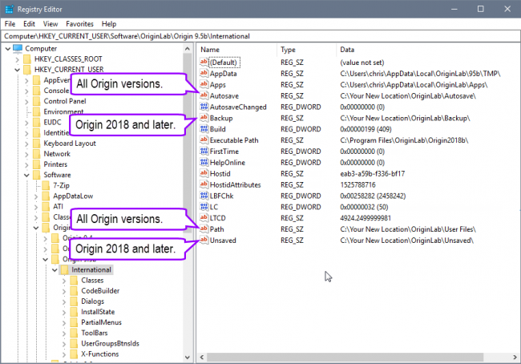

FAQ-930 Warum friert mein Windows ein oder stürzt ab, wenn ich Origin starte oder es ausführe? Es kann auch passieren, dass Origin nicht richtig funktioniert?
Windows-Freeze-Crash-when-Origin-Starts-or-is-Running
Letztes Update: 18.05.2023
Problem 1. Origin funktioniert nicht richtig
Sie können beispielsweise keine der Anpassungsfunktionen im Dialog Nichtlinearer Kurvenfit finden.
Wie löse ich Problem 1?
Lösung 1
- Führen Sie das Skript unten im Skriptfenster aus, um den Wert des Anwenderdateiordnerpfads in der Registry zu löschen. Danach können Sie den Anwenderdateiordner zurücksetzen, wenn Sie Origin das nächste Mal starten.
del –path
- Schließen Sie Origin.
- Starten Sie Origin neu. Legen Sie einen neuen Ordner als Anwenderdateiordner fest. Der neue Speicherort kann sich an einer beliebigen Stelle in Ihrem Dateisystem befinden, die sich NICHT im Verzeichnis des Cloud-Sync-Dienstes befindet. Stellen Sie sicher, dass der neue Speicherort über voll Lese- und Schreibrechte verfügt.
Lösung 2
Erstellen Sie ein "Backup" auf Ihrer lokalen Festplatte. Nehmen Sie z. B. OneDrive. Ändern Sie den Dateistatus in "Auf diesem Gerät immer beibehalten" (mit dem Symbol des grünen Kreises mit weißem Häkchen). Diese Dateien wurde auf Ihr Gerät heruntergeladen und können sogar jederzeit offline verwendet werden.
Problem 2. Fehlermeldung beim Origin-Start
Origin kann nicht gestartet werden, und es wird eine Fehlermeldung ausgegeben:
Das Skript, das mit
...
beginnt, ist zu lang. Das Lesen des Skripts wird abgebrochen.
Das Programm gibt auch den Fehler DIB kann nicht gelesen werden aus.
Wie löse ich Problem 2?
Lösung_1
Erstellen Sie ein "Backup" auf Ihrer lokalen Festplatte.
Lesen Sie im Abschnitt "Wie löse ich Problem 1 > Lösung 2" die Einzelheiten.
Lösung_2
Wechseln Sie den Speicherort des Origin-Anwenderdateiordners zu einer beliebigen Stelle in Ihrem Dateisystem befinden, die sich NICHT im Verzeichnis des Cloud-Sync-Dienstes befindet.
Lesen Sie im Abschnitt "Wie löse ich Problem 3" die Einzelheiten.
Problem 3. Windows 10 friert ein oder stürzt ab, wenn Origin gestartet oder ausgeführt wird
Windows 10 friert ein oder stürzt ab, wenn Origin gestartet oder ausgeführt wird. Die Fehlermeldung kann abhängig von dem verwendeten cloud-synchronisierten Dienst variieren. Zum Beispiel:
Sie sehen wahrscheinlich eine Fehlermeldung ähnlich der folgenden:
Möglicherweise werden auch die folgenden Informationen angezeigt:
Stop code: SYSTEM_SERVICE_EXCEPTION
What failed: cldflt.sys
Wie löse ich Problem 3?
Verschieben Sie Origins Anwenderdateiordner (und eventuell andere Ordner) aus den verschiedenen Cloud-Syncing-Diensten.
 | Vor Durchführen der folgenden Schritte zum Verschieben der Origin-Ordner aus den Cloud-Syncing-Diensten MÜSSEN Sie, falls Sie Origin 2018 oder Origin 2018 SR1 verwenden, ein Upgrade auf Origin 2018b oder höher vornehmen. Die folgenden Schritte können nicht verhindern, dass Origin 2018 oder 2018 SR1 Windows zum Abstürzen bringen. Sie können sie testen, aber Sie werden wahrscheinlich noch immer Abstürze erleben.
|
1. Alle ausgeführten Instanzen von Origin schließen
2. Bestimmen, ob der Anwenderdateiordner sich in einem Cloud-Syncing-Dienst befindet
Navigieren Sie zu Ihrem Dropbox-, Google-Drive- oder OneDrive-Ordner im Windows-Dateiordner, um den Ordner herauszusuchen. Dort gibt es wahrscheinlich einen Shortcut zu ihm über das Navigationsfeld. Falls das so ist, sollten Sie unter den Ordnern nach einem Unterordner mit dem Titel Anwenderdateien suchen.
Beispiel eines Anwenderdateiordners auf OneDrive:

Wenn Sie keinen Shortcut zu einem der Dienste im Navigationsfeld sehen, haben Sie entweder keinen installiert oder Sie müssen tiefer in Ihrem Dateisystem suchen, um den Ordner ausfindig zu machen.
Sollte kein Dienst installiert sein oder können Sie den Anwenderdateiordner nicht in einem synchronisierten Ordner finden, dann wird das Problem nicht aufgrund des Ordners verursacht. Sie sollten sich an den Technischen Support von OriginLab wenden, um weitere Hilfe zu erhalten.
3. Einen neuen Speicherort für Ihren Anwenderdateiordner bestimmen
Der neue Speicherort kann sich an einer beliebigen Stelle in Ihrem Dateisystem befinden, die sich NICHT im Verzeichnis des Cloud-Sync-Dienstes befindet. Stellen Sie sicher, dass der neue Speicherort über voll Lese- und Schreibrechte verfügt.
4. Neuen Anwenderdateiordner erstellen
Im neuen von Ihnen zuvor festgelegten Speicherort erstellen Sie manuell einen Unterordner mit dem Titel "OriginLab". Erstellen Sie eine Anzahl von Unterordner basierend auf der Version von Origin, die Sie verwenden. Recht- und Großschreibung sind wichtig.
| Für Origin 2018b oder höher |
Für Origin 2017 oder früher |
| Fügen Sie diese Unterordner hinzu: Anwenderdateien, Autosave, Backup und Unsaved. |
Fügen Sie diese Unterordner hinzu: Anwenderdateien, Autosave. |
|  |
 |
Notieren Sie sich den vollständigen Pfad zu diesen Ordnern.
5. Speicherorte für Origin-Ordner ändern
Um das Abstürzen von Windows durch den Start von Origin zu verhindern, müssen Sie eine andere Methode verwenden, um den Anwenderdateiordner für Origin zurückzusetzen.
- Geben Sie im Suchfeld der Windows-Taskleiste
regedit ein.
- Wählen Sie das Ergebnis ganz oben und führen Sie den Befehl
regedit aus.
Oder:
- Klicken Sie mit der rechten Maustaste auf das Startmenü und wählen Sie dann Ausführen.
- Geben Sie
regedit in Öffnen: Feld ein und wählen Sie OK.
Wenn der Registry Editor geöffnet wird, navigieren Sie zum folgenden Pfad im linken Bedienfeld des Dialogs:
Computer\HKEY_CURRENT_USER\Software\OriginLab
Im OriginLab Registrierungsschlüssel sollten Sie einen oder mehrere Unterschlüssel (Sub-Key) sehen, einen für jede Version von Origin, die auf Ihrem PC installiert ist. Wählen Sie den Schlüssel für Ihre Version und erweitern Sie ihn. Wählen Sie seinen Internationalen Unterschlüssel. Unten wird ein Beispiel für Origin 2018b gezeigt:

Suchen Sie im rechten Bedienfeld des Registrierungs-Editors einen Wert mit dem Namen Path und dann:
- Klicken Sie mit der rechten Maustaste auf
"Path".
- Wählen Sie im Hauptmenü Ändern....
- Geben Sie den VOLLSTÄNDIGEN Pfad zum neuen Anwenderdateiordner ein (Sie sollten diesen zuvor notiert haben). Stellen Sie sicher, dass Sie einen Backslash am Ende des Pfads hinzufügen.
Zum Beispiel: C:\your New Location\OriginLab\User Files\
- Klicken Sie auf OK.

Suchen Sie im rechten Bedienfeld des Registrierungs-Editors einen Wert mit dem Namen Autosave. Wenn Sie ihn nicht finden können, befolgen Sie diese Schritte:
- Fügen Sie einen neuen Wert hinzu, indem Sie mit der rechten Maustaste in den leeren Bereich des Felds klicken und im Kontextmenü Neu: Zeichenfolge auswählen. (Siehe Schritt #1 unten).
- Benennen Sie den neuen Wert in "Autosave" um, indem Sie mit der rechten Maustste auf "Neuen Wert #1" klicken und im Kontextmenü Umbenennen auswählen. (Siehe Schritt #2 unten).
Schritt #1:

Schritt #2:

Als Nächstes modifizieren Sie den neuen Wert für "Autosave", indem Sie genau die gleichen Schritte wie unter Festlegen des Werts für den "Pfad" des neuen Speicherorts für den Anwenderdateiordner oben beschrieben durchführen, außer dass Sie "Autosave" gegen "Anwenderdateien" austauschen.
| Hinweise: Für Origin 2018b und höher müssen Sie genau die gleichen Schritte wie in Festlegen des Werts "Autosave" für den neuen Speicherort des Ordners Autosave beschrieben zweimal wiederholen. Beim ersten Mal sollte der Begriff "Backup" den Begriff "Autosave" ersetzen und beim zweiten Mal der Begriff "Unsaved" den Begriff "Autosave".
|
Das Ergebnis der Änderungen in der Registry sind unten abgebildet. 
6. Origin neu starten
Nachdem Sie jetzt Ihren Anwenderdateiordner mitsamt den anderen relevanten Ordnern verschoben haben, können Sie Origin starten. Es sollte reibungslos ausgeführt werden und die neuen Ordner verwenden.
Verwandte Themen
Schlüsselwörter:Windows, Origin, Absturz, einfrieren, Start, starten, ausführen, blauer Bildschirm, Blue Screen, Bluescreen of Death, BSOD, Stop Code, SYSTEM_SERVICE_EXCEPTION, What failed, cldflt.sys, OneDrive, Google Drive, Backup und Sync, DropBox, Bei Ihrem PC ist ein Problem aufgetreten und er erfordert einen Neustart. Wir sammeln nur einige Fehlerinformationen und starten dann für Sie neu.